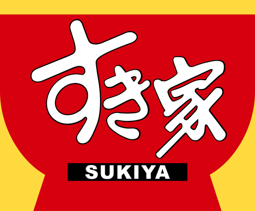
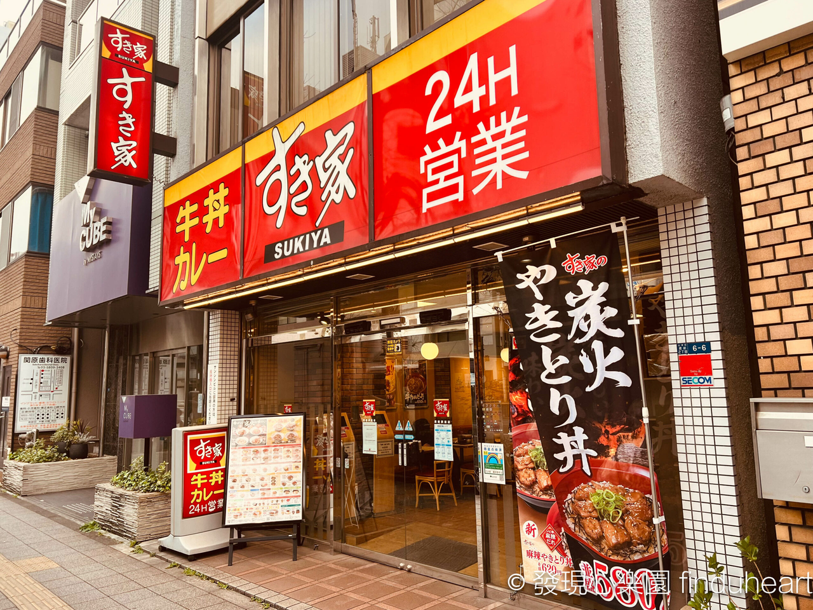
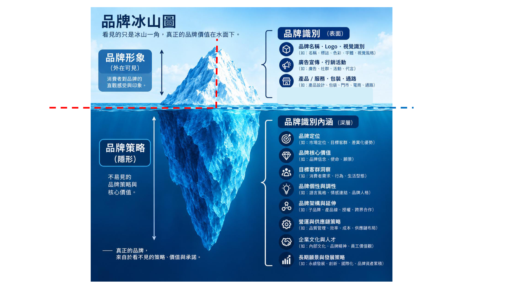
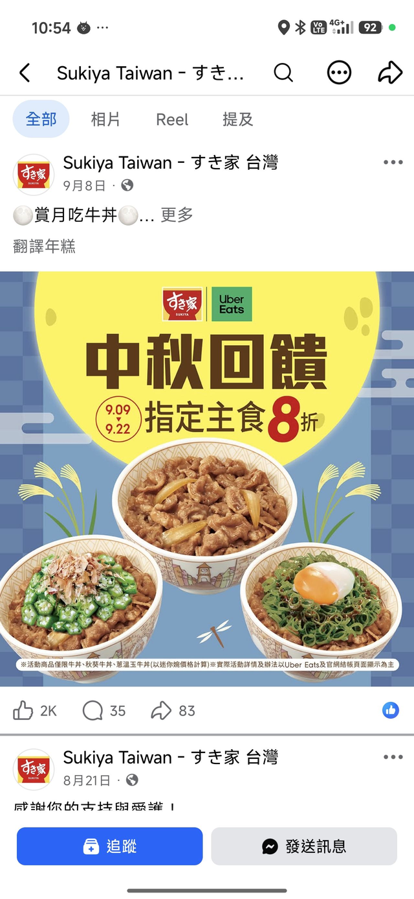
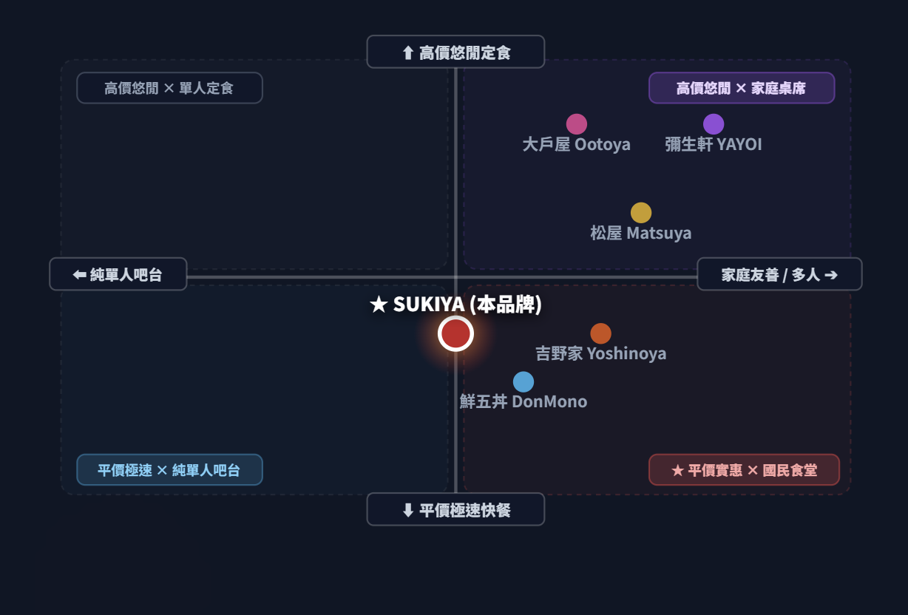
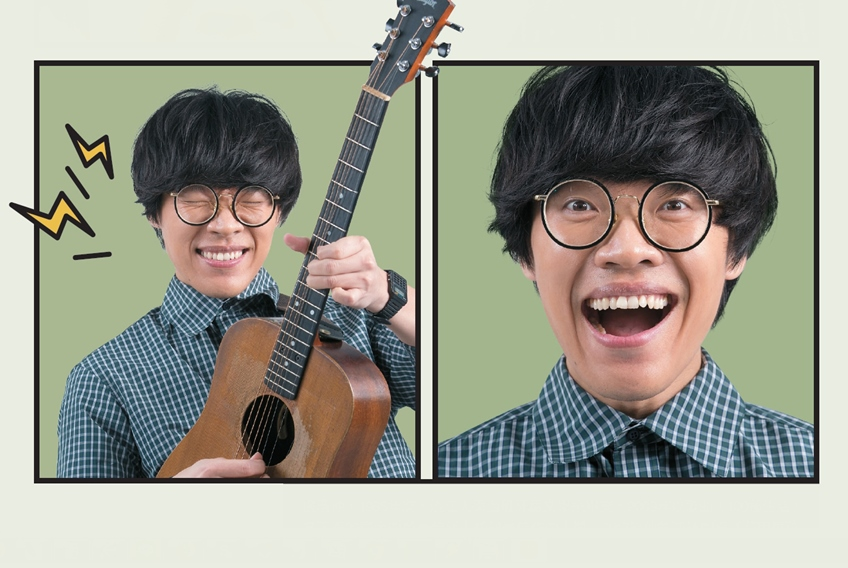
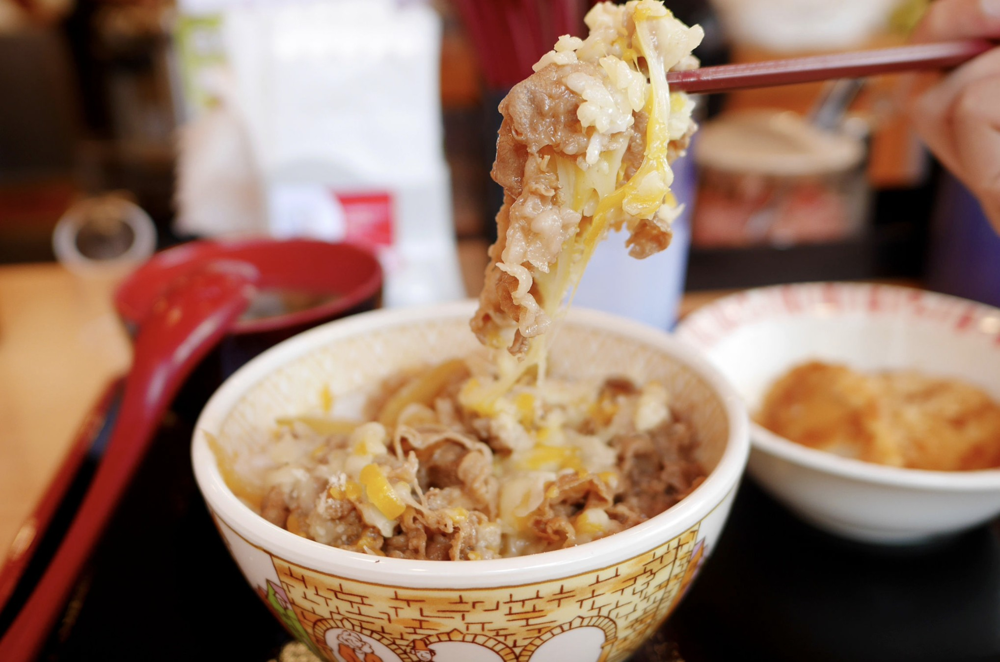

1
品牌: す き 家-Sukiya
Sukiya

す き:
壽喜燒 (sukiyaki)
喜歡 (suki)
喜歡 (suki)
家:
溫馨放鬆的家庭食堂
日式連鎖平價
快餐 / 牛丼
快餐 / 牛丼
多元牛丼 /
咖哩飯
咖哩飯
全球 2,600+ /
台灣 65+ 門市
台灣 65+ 門市
吧檯席 /
多人桌席
多人桌席
國立台北商業大學 • 品牌設計期中報告 • 指導教授：黃焜煌 老師 • 報告組別：第 20 組

★
架構總覽: 品牌冰山圖
Sukiya

🧭 全篇報告導覽地圖 (Presentation Roadmap)
30 秒架構前瞻
⚓ 第一階段：探勘水面下 90% 隱形策略
第 1 ~ 5 章
• 第 1 章 核心競爭力：ZENSHO MMDS 垂直低溫冷鏈與 30 秒極速出餐• 第 2 章 顧客洞察：外送廣告反推上班族與學生破碎時間剛需
• 第 3 章 價值主張：百元熱食、多份量客製與 24 小時無休陪伴
• 第 4 章 品牌定位：STP 策略與空間/價格中央黃金甜蜜點知覺圖
• 第 5 章 品牌個性：國民神隊友擬人化原型，對標「盧廣仲」
🚢 第二階段：浮出水面 10% 外顯識別接觸點
第 6 章
• 第 6 章 品牌識別：すき家命名三重哲學與三大品牌承諾• 第 6-B 章 品牌元素：紅碗黃字招牌、紅白暖心裝潢、專利雙層防軟爛外帶碗
⚖ 第三階段：架構校驗與體驗落地
第 7 ~ 8 章
• 架構校驗 冰山檢核：水下策略與水上接觸點一對一校驗• 第 7~8 章 體驗與形象：承諾落差防範與顧客心智最終印象
2
核心競爭力: 關鍵優勢與產品層次
Sukiya
關鍵優勢 (Core Advantages)
龐大門店 & 完整冷鏈 (MMDS)
母公司 ZENSHO 採全球垂直整合冷鏈體系，從牧場源頭、低溫海運、中央廚房到門市一條龍，成本與品質牢牢鎖定。
高餐點品質 & 多樣選擇
嚴選優質牛肉搭配秘傳壽喜燒醬汁與越光米飯，提供牛丼、咖哩飯、朝食定食與豐富季節限定料理。
24小時運營 & 快速出餐
工業工程動線優化，定量舀肉勺與電氣溫控串接，點餐後最快 30 秒出餐，全天候 24 小時守候城市。
產品層次分析 (Kotler 5 Levels)
1. 核心利益
短時間內填飽肚子，迅速恢復精神體力
2. 基本產品
主食現煮牛丼、咖哩飯、多樣份量選擇
3. 期望產品
上餐極速效率、用餐環境乾淨、食安把關
4. 擴增產品
客製份量(迷你至超大碗)、特色配菜、呼叫鈴
5. 潛在產品
超商聯名、冷凍調理包進超市、智慧自取櫃
3
廣告: 廣告投放與反推客群
Sukiya

廣告投放:
雙品牌聯名與投放渠道：SUKIYA 官方 Facebook 粉專 × Uber Eats 外送平台，精準推播手機訂餐客群。
反推客群:
Uber Eats 8 折反推客群：
外送依賴者 / 價格敏感型小資族 / 中秋連假不想烤肉洗碗的「懶人商機」剛需族群。
外送依賴者 / 價格敏感型小資族 / 中秋連假不想烤肉洗碗的「懶人商機」剛需族群。
行銷啟示:
搭外送平台順風車，不跟烤肉店硬碰硬；牛丼打 8 折只是個誘餌，實質帶動高毛利副餐與配菜加購。
3-B
價值主張: 顧客需求 ➔ 價值主張
Sukiya
⏱ 極致時間掌握：30 秒出餐分秒不差
顧客痛點：午休只有 45 分鐘，排隊候位極度浪費時間。
價值主張：標準化極速出餐動線，點餐入喉不到一分鐘，省下的時間留給自己。
價值主張：標準化極速出餐動線，點餐入喉不到一分鐘，省下的時間留給自己。
💰 平價享受美味：100 元初頭享道地日式
顧客痛點：百貨日式定食動輒 300~400 元，日常負擔沉重。
價值主張：橫濱傳承壽喜燒醬汁配越光米，以百元極致 CP 值滿足每日外食。
價值主張：橫濱傳承壽喜燒醬汁配越光米，以百元極致 CP 值滿足每日外食。
🥗 健康自由客製：6 種份量與豐富配菜
顧客痛點：傳統外食便當高油重鹹、蔬菜不足、份量死板。
價值主張：迷你碗到超大碗自選，搭配秋葵、溫泉蛋、青菜，均衡健康無負擔。
價值主張：迷你碗到超大碗自選，搭配秋葵、溫泉蛋、青菜，均衡健康無負擔。
🌙 24小時安心守候：城市永不熄滅的暖光
顧客痛點：深夜加班、清晨趕工，街邊只有冷冰冰微波品。
價值主張：全天候現做熱食供應，隨時隨地給予身心最及時的溫暖慰藉。
價值主張：全天候現做熱食供應，隨時隨地給予身心最及時的溫暖慰藉。
4
品牌定位: STP 策略分析
Sukiya
S 市場區隔
平價 vs. 奢華
• 極速平價快餐 (100~180元)
• 高價悠閒慢食 (300~450元)
• 極速平價快餐 (100~180元)
• 高價悠閒慢食 (300~450元)
吧台 vs. 桌席
• 純單人快翻吧台席
• 家庭朋友多人聚餐桌席
• 純單人快翻吧台席
• 家庭朋友多人聚餐桌席
T 目標客群
上班族 & 學生
• 追求效率與高 CP 值外食
• 拒絕低質微波，求現煮熱丼
• 追求效率與高 CP 值外食
• 拒絕低質微波，求現煮熱丼
外送與小家庭
• 下班疲倦無暇下廚的租屋族
• 帶小孩求出餐快又營養之家長
• 下班疲倦無暇下廚的租屋族
• 帶小孩求出餐快又營養之家長
P 定位價值主張
比高價定食更省時平價
• 價格僅 1/3，速度快 10 倍
• 破除吉野家早期純男性吧台限制
• 價格僅 1/3，速度快 10 倍
• 破除吉野家早期純男性吧台限制
國民食堂黃金甜蜜點
• 任何時段想吃飯的無壓安心首選
• 任何時段想吃飯的無壓安心首選
4-B
定位圖: 二維知覺定位分析
Sukiya

KBF 購買決策雙軸確立
• 縱軸 (步調/價格)：平價極速快餐 ⟷ 高價悠閒定食
• 橫軸 (空間/客群)：純單人吧台席 ⟷ 家庭多人桌席
• 橫軸 (空間/客群)：純單人吧台席 ⟷ 家庭多人桌席
主要競品落點對比
• 大戶屋/彌生軒：右上高價悠閒慢食，客單高、翻桌慢
• 松屋/鮮五丼：偏左側純吧台與快取，難以容納家庭
• 吉野家：平價但偏右側家庭席，吧台動線受限
• 松屋/鮮五丼：偏左側純吧台與快取，難以容納家庭
• 吉野家：平價但偏右側家庭席，吧台動線受限
SUKIYA 正中央黃金甜蜜點 (Sweet Spot)
吧台席與家庭桌席 1:1 分流！ 一人速食 30 秒出餐即走，家庭用餐舒適寬敞，創造同業最高翻桌率與坪效！
5
品牌個性: すき家 & 盧廣仲
Sukiya
1. 親民樸實形象 vs. 親民實惠價格
兩者都具備「親民、接地氣」的核心特質，縮短與消費者之間的心理距離。
2. 多元自由創作 vs. 多樣菜單
創作風格多樣（民謠/爵士/搖滾）& 多種餐點與配菜自選組合，打破單一刻板。
3. 深厚功底 vs. 美味丼飯
三金實力派 vs. ZENSHO 全球 MMDS 冷鏈，強調「扎實底蘊帶來優質成果」。

6
品牌識別: 核心命名與終極承諾
Sukiya
命名哲學三層次
すき (Suki - 喜歡)
寄託創辦人期望『成為人人熱愛、深受大眾喜愛』的國民餐飲首選。
すき焼 (Sukiyaki - 壽喜燒)
傳承明治維新牛鍋烹調醬汁精髓，奠定道地日式料理血統。
家 (Ya - 家庭食堂)
營造如同家庭般溫暖、男女老幼皆能安心共享的國民食堂。
品牌三大終極承諾 (Promise)
★ 安全安心 (Safety & Quality)
全流程垂直冷鏈檢驗，溯源透明，杜絕食安疑慮。
全流程垂直冷鏈檢驗，溯源透明，杜絕食安疑慮。
★ 平價美味 (Affordability)
百元出頭定價，讓高品質熱飯成為人人負擔得起的日常。
百元出頭定價，讓高品質熱飯成為人人負擔得起的日常。
★ 隨時都在 (24/7 Reliability)
24 小時守候城市作息，給予最即時的元氣後盾。
24 小時守候城市作息，給予最即時的元氣後盾。
6-B
品牌元素: 6 大實體接觸點
Sukiya
1. Logo 標誌
橫濱紅底白碗標誌，黃色招牌象徵朝陽與熱騰騰元氣。
2. Slogan 口號
『隨時都在的美味牛丼』，訴求隨時隨地補充能量。
3. 經典紅黃色系
亮紅誘發食慾，暖黃傳遞安全感，街道辨識度極高。
4. 專利分層外帶碗
飯肉雙層分離防止米飯軟爛，完美還原店內美味。
5. 門市動線與呼叫鈴
個人吧台與家庭桌席 1:1 分流，全桌配置無線點餐鈴。
6. 數位與外送平台
FB 粉絲團新品推播與 Uber Eats 聯手推動 8 折誘餌。
★
架構校驗: 冰山圖一致性檢核
Sukiya
| 水面下核心策略 (90% 隱形基石) | 水面上外顯品牌元素 (10% 接觸點) | 一致性檢核結論 (Coherence) |
|---|---|---|
| MMDS 垂直冷鏈與工業工程出餐動線 | 30 秒極速出餐、全透明清潔廚房、HACCP 認證 | ✔ 100% 互扣：實力轉化為顧客時間價值 |
| 受眾追求平價高 CP 值與極速效益痛點 | 百元初頭定價、牛丼 8 折外送吸客誘餌 | ✔ 100% 互扣：精準命中受眾微奢侈預算 |
| 兼具單人快食與家庭客包容之雙軌定位 | 單人靜音吧台 + 多人桌席 + 兒童餐椅備配 | ✔ 100% 互扣：突破傳統單身男性牛丼限制 |
| 親民、接地氣、活力陪伴之品牌人格 | 對標「盧廣仲」、暖黃亮紅配色、朝食早安定食 | ✔ 100% 互扣：形象與國民食堂精神完美共鳴 |
| 外帶便利與深夜剛需不妥協口感 | 24 小時營業、專利雙層防軟爛分層外帶盒 | ✔ 100% 互扣：包裝科技兌現堂食級美味 |
7
品牌體驗: 承諾與真實體驗之一致性
Sukiya
⏱ 速度承諾驗證
承諾：30 秒極速上餐
• 實踐：桌邊按下呼叫鈴，店員 5 秒內回應；托盤熱丼飯在 30 秒至 1 分鐘內端上。
• 體驗：完全兌現上班族分秒必爭的時間期待。
• 實踐：桌邊按下呼叫鈴，店員 5 秒內回應；托盤熱丼飯在 30 秒至 1 分鐘內端上。
• 體驗：完全兌現上班族分秒必爭的時間期待。
🧼 食安衛生驗證
承諾：開放潔淨安心食安
• 實踐：調理台整潔無油垢，餐具清潔經高溫消毒，中央廚房嚴格控管肉質。
• 體驗：遠遠超越街邊傳統小吃與便當店的安心感。
• 實踐：調理台整潔無油垢，餐具清潔經高溫消毒，中央廚房嚴格控管肉質。
• 體驗：遠遠超越街邊傳統小吃與便當店的安心感。
👨👩👦 空間包容驗證
承諾：全齡無壓自在用餐
• 實踐：一人獨食有隔板不尷尬；家庭用餐提供專用兒童碗勺與卡座沙發。
• 體驗：任何人走進去都沒有心理門檻或社交壓力。
• 實踐：一人獨食有隔板不尷尬；家庭用餐提供專用兒童碗勺與卡座沙發。
• 體驗：任何人走進去都沒有心理門檻或社交壓力。
8
品牌形象: 顧客心智最終烙印
Sukiya
「不只是賣牛丼，而是每個平凡日常中，隨時為你提供溫暖與元氣的國民神隊友。」
1. 實惠平價且不可或缺：百元出頭現做熱食，是抗通膨時代最堅實的外食避風港。
2. 全時守候與極致信任：24 小時永遠明亮的黃紅招牌，給予都市夜歸人最安心的陪伴。
3. 扎實底蘊與厚積薄發：全球 2,600+ 門市與 MMDS 冷鏈，成就水面下最堅固的護城河。
謝謝聆聽 • 懇請黃焜煌老師與同學指教！
